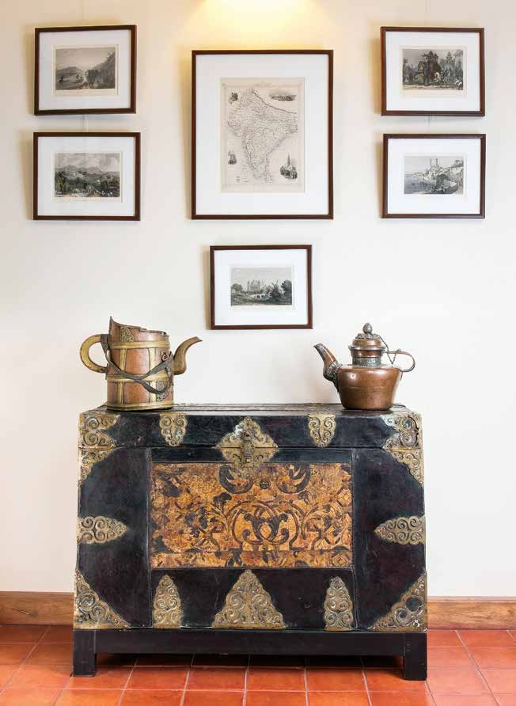
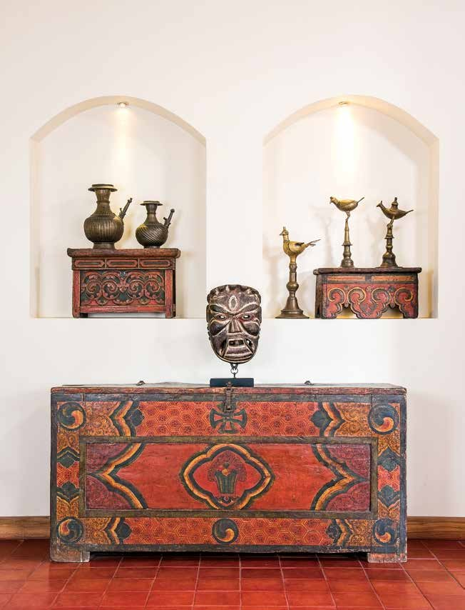
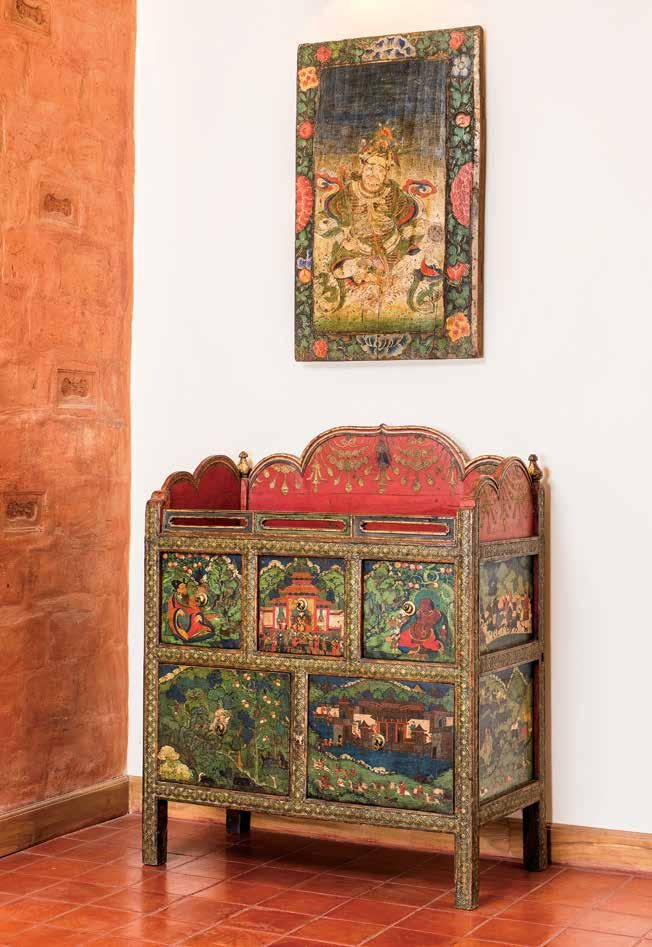
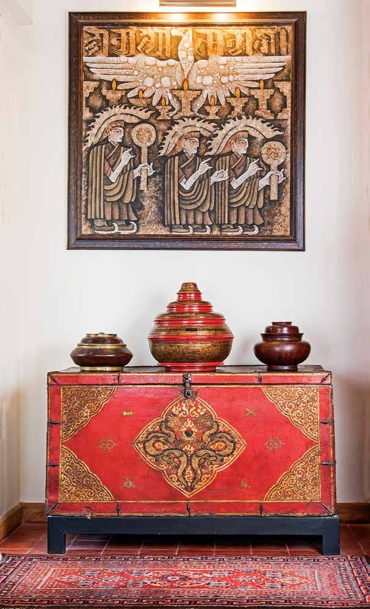
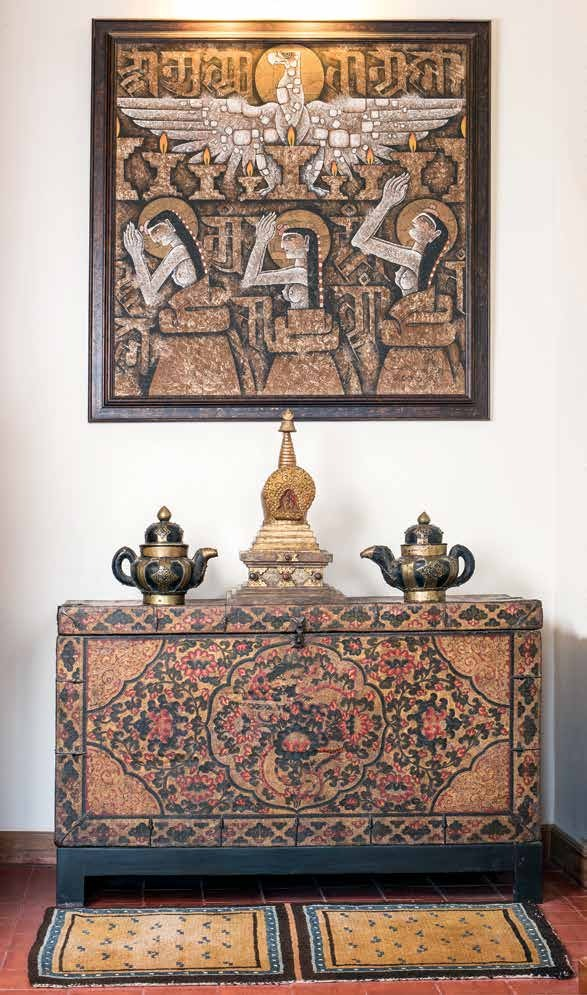

Image 1 — 20th Century Painting by Tibetan Artist Gade · Tibetan Jug and Newari Candlesticks · Tibetan Cabinet
About
About
Luca and Camilla Corona met in Tibet in the 1980s, as the country cautiously
opened to outsiders. They were quickly captivated by the rugged landscape,
the people, the Buddhist culture, and the Tibetans’ distinctive artistic flair.
Luca, a guide fluent in Tibetan and a student of Buddhist philosophy, traveled
extensively throughout the region. These journeys revealed not only the
remarkable art but also the fragility of what remained: decades of upheaval,
deliberate destruction, and recent consumerism had stripped many homes
and religious sites of their treasures.
Together they began collecting antique furniture to showcase a lesser known
aspect of Tibetan culture. Only a few pieces arriving from the Tibetan
countryside to Lhasa were ready to place in one’s home, so everything had to
be carefully cleaned and inspected. In the early 1990s, while living in
Kathmandu, they established a small workshop with Tibetan craftsmen to
restore each piece using traditional methods. Metal nails added over the
years were removed and replaced with traditional joinery — wooden pegs and
“butterfly” joints. Modern synthetic varnish used by the dealers in Tibet was
gently stripped away and the surfaces restored and finished with traditional
shellac polish. Over three decades they enhanced their collection of carefully
conserved pieces; many of which were used in catalogues and displayed
around the world including in the landmark Pacific Asia Museum exhibition in
California.
Kathmandu remained the centre of the Tibetan furniture trade through
the 1990s and early 2000s. In 2012, Luca and Camilla opened the doors to
their newly built eco-resort on the northern rim of the Kathmandu Valley
directly under the Shivapuri forest. The guest house, built in Nepali style, was
the perfect setting to display local art, handmade Himalayan rugs and antique
Tibetan furniture.

Image 3 — Copper and Brass Tibetan Jug & Tea Pot · Tibetan Leather Trunk
An event that completely transformed Tibetan culture was the introduction of
Buddhism as the state religion in the 7th Century by Emperor Songsten
Gampo and his two foreign wives: the Licchavi Princess Bhrikuti from Nepal,
and the Tang Princess Wencheng from China. Buddhism had a profound
effect on all aspects of society and culture, including the use and function of
Tibetan furniture.
Another influential factor was the availability of wood, a primary resource.
Extensive forests covered the Eastern region of Kham and the province of
Kongpo prior to the Chinese occupation and subsequent massive
deforestation. However, most of Central Tibet and the northern plain of
Chang Tang lie above 3,500 metres in altitude, so the type of timber available
was limited to a white, soft poplar, known as chapa, or the more hard-wearing spruce, pine and fir which had to be transported at considerable
cost from the Southern district of Lhoka.
The Silk Road
One of the main routes on the Silk Road skirted just North of the Tibetan
Plateau, while minor caravan routes made their way up from Xining in China
across the northern plain to Lhasa, thus linking Tibet with Central Asia and
beyond. A further ancient route, known as the Tea Horse Road, wound
through the mountains of Sichuan and Yunnan onto the Tibetan plateau,
taking tea to Tibet and ponies back to China.
To the West, Leh in Ladakh was a crossroads for caravans between Tibet,
Kashmir and Yarkand. Routes crossing the mighty Himalayas linked Lhasa
with Nepal and the Indian subcontinent. For centuries, these routes enabled
the transmission of goods, skills, knowledge, culture and beliefs — as well
as the exchange of artistic methods and tastes.
Tibet absorbed outside influences in the form of religion from India and
aesthetics from Kashmir, Nepal, Central Asia and China, but in the process
created works of art that were unquestionably Tibetan. Religious art
predominated. Entering a Tibetan monastery, one is struck by the
kaleidoscopic colours, textures and design. The walls are covered from top
to bottom with murals of a vast array of Buddhas, Bodhisattvas, Arhats and
their deeds or life stories. Immense gold statues dressed in silken robes,
encrusted with jewels are flanked by carved and painted altars. Cabinets and
long tables depicting goddesses are piled high with offerings and flickering
butter lamps. Even the ceilings are alive with wonderful colours and
auspicious images.
A thangka painter who depicted Buddhist deities, scenes or mandalas had to
follow strict iconographic rules according to Buddhist texts, while a
decorator or tson pa who was responsible for painting furniture, architectural
features and interiors was free to use his skill to combine any popular motif
in a fresh and artistic manner, with particular attention given to the use of
colour and shading. Although the freedom of a tson pa was seemingly
limitless, a definite Tibetan style emerged in the manner in which they
executed the recurring motifs and observed some unwritten conventions.
The Tibetan Furniture Market
For centuries, Lhasa was an important trading centre between the Indian
subcontinent to the South, China to the East, and Central Asia to the North-West. This trade came to an abrupt halt with the Chinese occupation of Tibet
in the 1950s. Given the extensive destruction of Tibetan cultural heritage that
took place, it is surprising that anything survived at all. The destruction of the
monasteries and temples began in Amdo and Kham as early as 1958, long
before the Cultural Revolution (1966–1976). The dismantling was systematic;
first the valuable golden statues and moveable art works were removed and
sent to China, then furniture and other items considered ‘utilitarian’ were
distributed locally amongst the general population, while sacred scriptures
were burnt.
The Tibetans did what they could to preserve the remaining physical vestiges
of their culture, including the monastic furniture in their possession. The first
furniture to arrive in Kathmandu in the late 1980s was in surprisingly good
condition. Gradually, given the increased demand, Tibetan dealers collected
blackened pieces from far-flung villages and cleaned off the soot that often
covered the entire piece, and then applied a thick, unnatural synthetic
varnish to replace the shine.
The first ever exhibition of Tibetan furniture was held at the Pacific Asia
Museum in Pasadena, California between November 2004 and February
2005. Luca Corona was asked to assess the pieces and write the core article
detailing how the furniture was made and its use in Tibet prior to 1950 titled
Tibetan Furniture: Construction, Form and Function which was published in
the book-catalogue for the exhibition called Wooden Wonders: Tibetan
Furniture in Secular and Religious Life edited by David Kamansky.

Image 2 — Small Tibetan Tables · Newari Vases & Bird Lamps · Old Himalayan Mask

Image 9 — Tibetan Painted Panel · Pegam Cabinet
A Personal Memory
Every collector knows the excitement of entering an Aladdin’s cave filled with
hidden treasures and intriguing finds. Stepping into the house of a local
dealer offered a unique glimpse into Tibetan culture and everyday life.
Luca and Camilla clearly recall their anticipation of entering a Lhasa dealer’s
home, adjusting to the darkness after the bright mountain sunlight, and
being led through the sombre corridor to the main room. The smells of
incense, butter lamps, and momos (Tibetan dumplings) would waft through
the air as they sat on the wooden couch, covered with a beautiful, dusty old
rug. The lady of the house would enter with a thermos of steaming Tibetan
butter tea, the perfect energy drink for high altitudes.
Settling into this increasingly familiar environment, they caught up with their
hosts on family news, the current situation, and the latest dealer gossip: who
had bought what from whom, for how much, and who had overpaid for an
infamous fake. Meanwhile, their eyes were roving around the room,
glimpsing a perfect pair of old cabinets, a delightful table, often still covered
in soot, or a precious old teapot placed casually in front of them.
During these encounters, they would look around with a feigned air of
indifference while the dealer, usually a Khampa from Eastern Tibet, declared
how much he paid for his latest acquisitions. After to-ing and fro-ing and
often some well-practiced theatrics, they would remind him of their
reputation for prompt payment and the deal would close.

Image 7 — Contemporary Tibetan Painting by Ang Sang · Tibetan Tsampa Pot · Tibetan Trunk

Image 8 — Contemporary Tibetan Painting by Ang Sang · Pair of Tibetan Tea Pots · Wooden Stupa
The Collection
The Collection
The Corona Collection’s catalogue of antique furniture pays tribute to the skilled, ingenious
artisans who created each box, table, altar, and cabinet, and to the rich, fascinating culture that
inspired them. Each object is presented as a witness to Tibetan life, craft and resilience.
No pieces found
Try adjusting your search term.
Each item has been restored, preserved and authenticated with exceptional care.
The pair of monastic boxes EB108P is in the UK. All other pieces are in Kathmandu, Nepal.
Shipping can be arranged worldwide.
Enquire
Write to us
We welcome questions about any piece in the collection.
Shipping can be arranged worldwide.